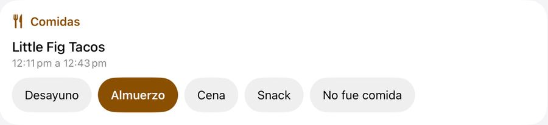
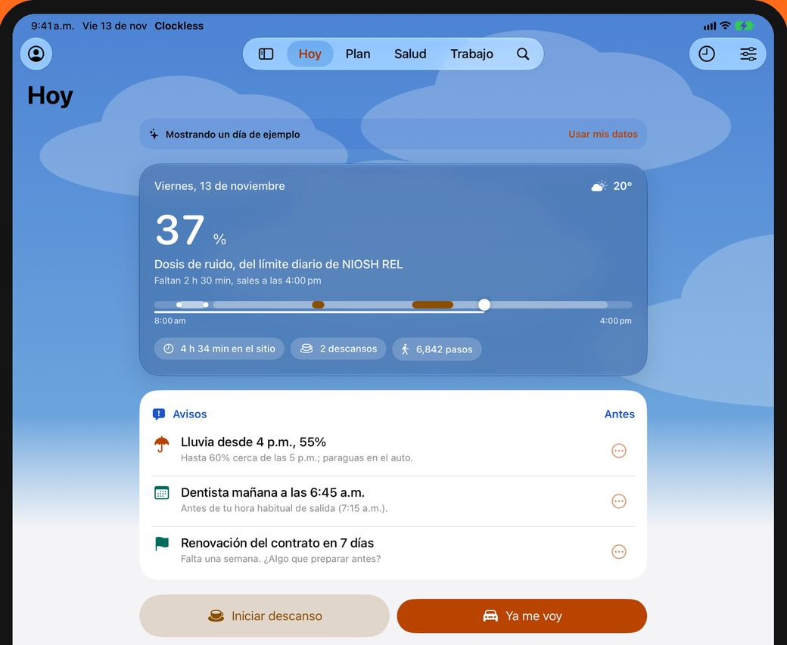
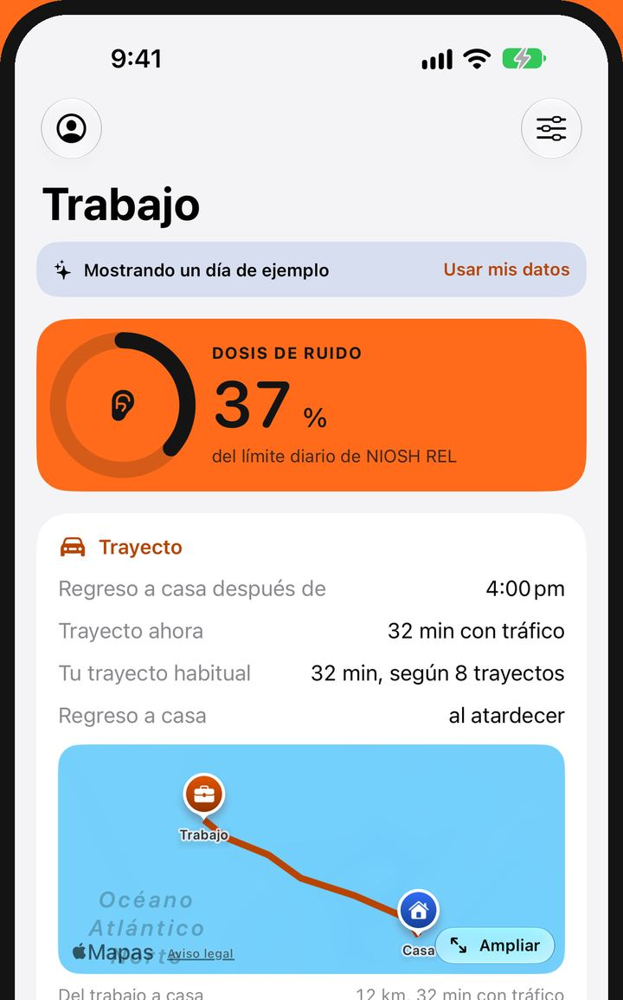
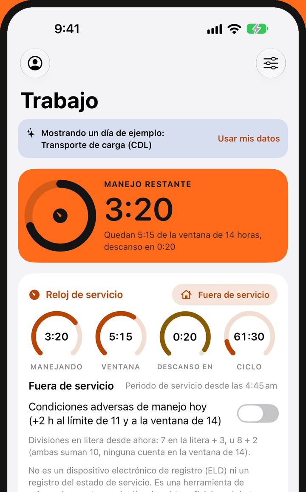
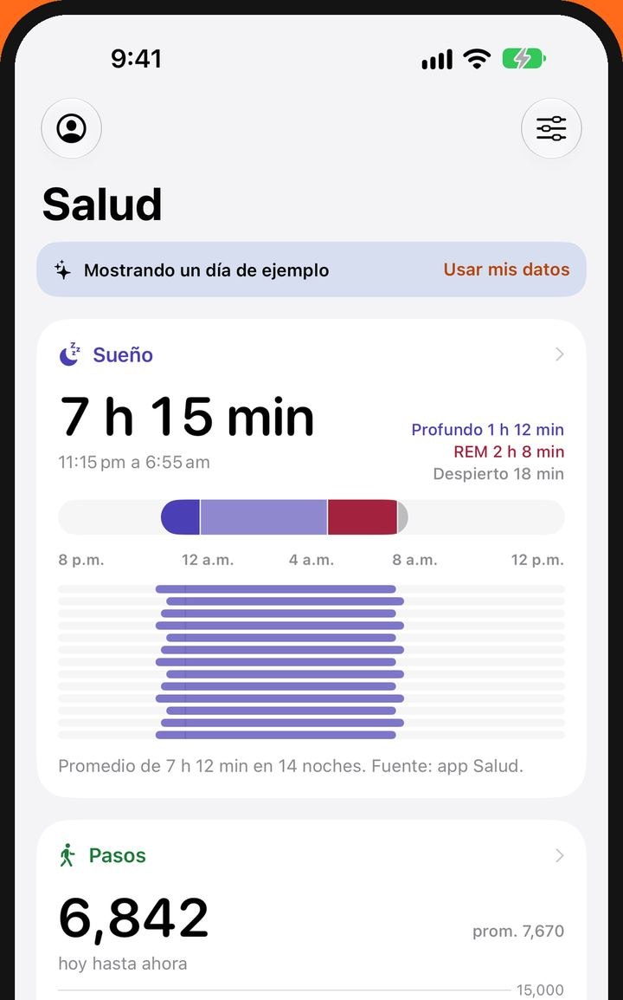

7:51a.m.
Llegada al trabajo
Sin checar entrada.
La salida de casa, la llegada al trabajo, la salida del trabajo y la llegada a casa se registran según los lugares de casa y trabajo que configures. Tus trayectos salen de los sensores de movimiento del iPhone.
Plan te muestra el día como una línea de tiempo: lo planeado en marcas huecas y lo que de verdad pasó, lleno, a la hora real.
10:00a.m.
Descanso (registrado)
Una parada durante tu turno cuenta como descanso.
Los lugares donde te detienes aparecen con su nombre de Apple Maps.
Descanso (registrado)15 min fuera12:11p.m.
Little Fig Tacos
Una parada a la hora de comer te hace una pregunta.
¿Fue desayuno, almuerzo o cena?

1:30p.m.
Faltan 2 h 30 min
Hoy es tu día en una pantalla.
- Cuándo salir
- Tiempo de manejo en vivo con tráfico
- Tu turno en una barra
- Descansos
- Comidas
- El clima
- Tu próximo evento
- Cómo dormiste
- Tus pasos

También hay widgets en la pantalla de inicio y la Pantalla bloqueada, una cuenta regresiva para salir como Actividad en vivo, el botón Ya me voy en el Centro de control y recordatorios para salir y caminar.
37%
Dosis de ruido, del límite diario de NIOSH REL
Hecho para tu tipo de trabajo.
Elige tu trabajo y la página Trabajo te muestra los números que importan, junto con la regla publicada de donde sale cada uno.
Piso ruidosoDosis de ruido, frente al límite de NIOSH. 
Transporte de carga (CDL)Un reloj de servicio con tus trayectos.Solo como referencia. No es un ELD. 
- Centro de datos, piso industrial, oficios
- Dosis de ruido con las lecturas del Apple Watch frente al límite de NIOSH u OSHA, horas en el sitio, descansos y calor.
- Viajes y entregas por app
- Millas de negocio por trayecto con la tarifa estándar por milla del IRS de ese día.
- Transporte de carga (CDL)
- Un reloj de servicio armado con tus trayectos y tus toques: 11 horas de manejo, ventana de 14 horas, descanso de 30 minutos, ciclo de 60/70 horas y periodos divididos en litera, como Actividad en vivo.Es para que lleves la cuenta de tu propio día. No es un dispositivo electrónico de registro (ELD) ni un registro del estado de servicio.
- Tiendas y comida
- Horas de pie, tiempo entre turnos y calor en la cocina.
- Aire libre
- Índice de calor y UV en tu sitio.
- Oficina
- Tiempo sentado y reuniones.
- Salud y primeros respondientes
- Tu sueño frente a tu turno.
4:00p.m.
Sin registrar: Salida del trabajo.
Te dice qué registró.
Cada hora sale de una de estas tres cosas:
- Un lugar que configuraste
- Un trayecto que notó tu teléfono
- Una parada que detectó
¿Por qué no se registró?
El registro de trayectos está desactivado, así que no se registran salidas ni llegadas. Actívalo en Perfil, en Lugares y trayectos.
Si falta una hora, el registro del día te explica por qué y te deja agregarla tú.
4:32p.m.
Casa
Tu registro se queda en tu iPhone.
- Sin cuenta
- Sin anuncios
- Sin analíticas
- Sin rastreo
Los datos de HealthKit solo se leen y nunca se envían, y el historial opcional se queda en tu dispositivo, fuera de iCloud. Solo las consultas del clima, del tiempo de manejo y de lugares van a Apple.
11:15p.m.
Anoche
Cómo dormiste, junto a tu día.
Salud toma sus datos de la app Salud con HealthKit: cómo dormiste anoche con sus fases, pasos, corazón, caminatas en un mapa y ánimo.
